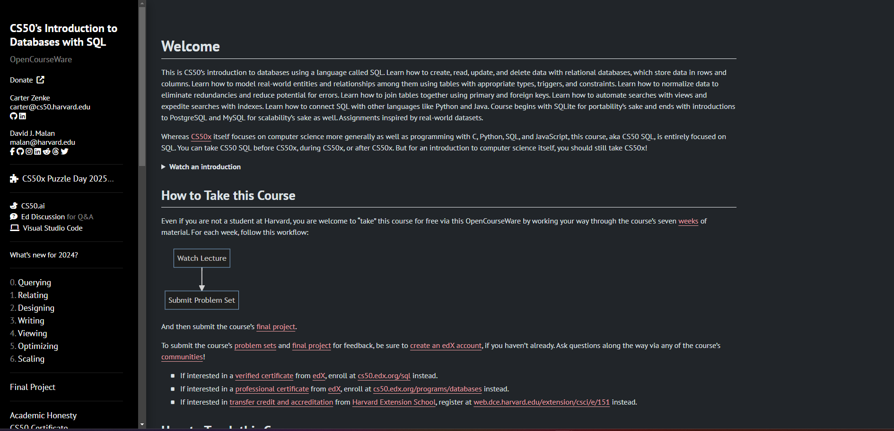

2025
Hello and Welcome to Abish Analytics!
My name is Abish Tuladhar, and I am originally from Kathmandu, Nepal. I'm a proud graduate of Saint Cloud State University, where I earned my degree in Management Information Systems in December 2024. I am currently pursuing a career in Data Analysis, with aspirations to transition into Data Engineering in the future.
In addition to my passion for data, I am also a dedicated singer-songwriter, having performed at various venues across St. Cloud. Music serves as a profound source of inspiration for me, enhancing my focus and creativity. I am a thrill loving person and an adventure
With my graduation behind me, I am eager to embrace new challenges and step out of my comfort zone to realize the ambitions I have long held. The year 2024 has been a transformative period of self-development for me; I have committed to a healthier lifestyle, engaging in daily exercise and nutrition. Moreover, I have performed more music gigs this year than in all of my previous years combined
I am excited to embark on my professional journey as a Data Analyst and am ready to tackle the challenges that lie ahead with determination and enthusiasm. Thank you for visiting Abish Analytics!
This is a personal project challenge I undertook to learn more about Tableau and its functionalities. I chose British Airways because it is one of my dreams to go to United Kingdom, and I would want to go through British Airways in order to be there for the first time.
In this project, I created an interactive Tableau Dashboard showing reviews for British Airlines using reviews and countires dataset available online. Here, users can interact with the dashboard filtering through multiple metrics connected using the information provided in the dataset. This is my very first big project in Tableau, and
completing this project has enabled me to gain deeper understanding of data manipulation, filtering and sorting, dashboard design, dimensions and measures, along with the ability to effectively interact with and interpret the visualizations created.
I undertook this Project to enhance my proficiency in Excel's advanced features. I developed an interactive Excel Visualization Dashboard to analyze bike sales using a publicly available bike store dataset.
The process involved comprehensive data cleaning to refine raw data and structure it for effective dashboard creation. Advanced Excel functionalities were utilized, including nested IF statements, duplicate removal, pivot tables, VLOOKUP, slicers, and pivot chart analysis.
This project provided valuable experience in data preparation, analysis, and visualization, demonstrating my ability to leverage Excel for insightful decision-making tools.

This is CS50’s introduction to databases using SQL. I undertook this project to learn more about SQL from THE best University in the world. In this project, I learned beginner and intermediate levels of query language using SQL. I learnt how to create, read, update, and delete data with relational databases, which store data in rows and columns. Furthermore, I learned how to model real-world entities and relationships among them using tables with appropriate types, triggers, and constraints. Learn how to normalize data to eliminate redundancies and reduce the potential for errors. Learnt how to automate searches with views and expedite searches with indexes, and finally how to connect SQL with other language like Python and Java. Course begins with SQLite for portability’s sake and ends with introductions to PostgreSQL and MySQL for scalability’s sake as well.
Analyze the Winning Numbers of Mega Million, finding meaningful insights in data & visualizing it for complex information easier to understand. This Excel Visualization Dashboard allows us to identify patterns, trends, and outliers that might be difficult to see in raw data.
I created an Excel-based visualization dashboard analyzing Mega Millions winning numbers to uncover patterns, trends, and outliers. Using data from Data.gov, I transformed raw datasets, applied advanced Excel functions (COUNTIF, INDEX-MATCH, VLOOKUP), and built pivot tables to answer key questions like the most and least frequent winning numbers. This project highlights my data cleaning, analysis, and visualization skills while providing an engaging demonstration of turning complex datasets into actionable insights.